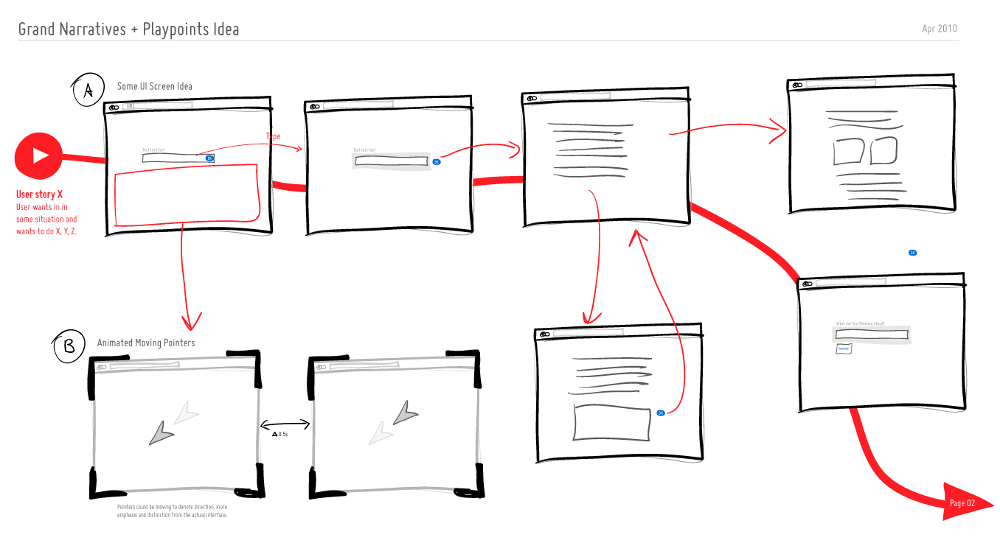
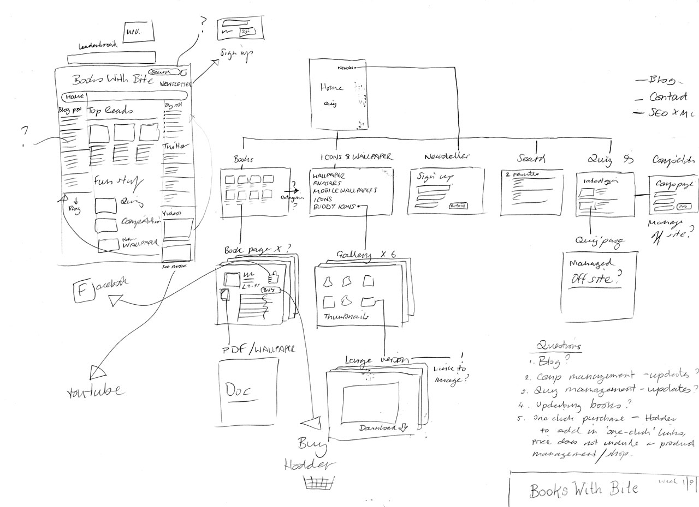
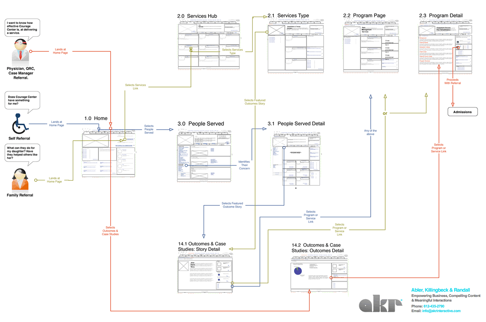
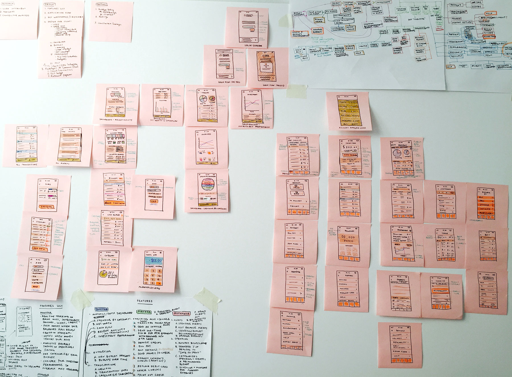
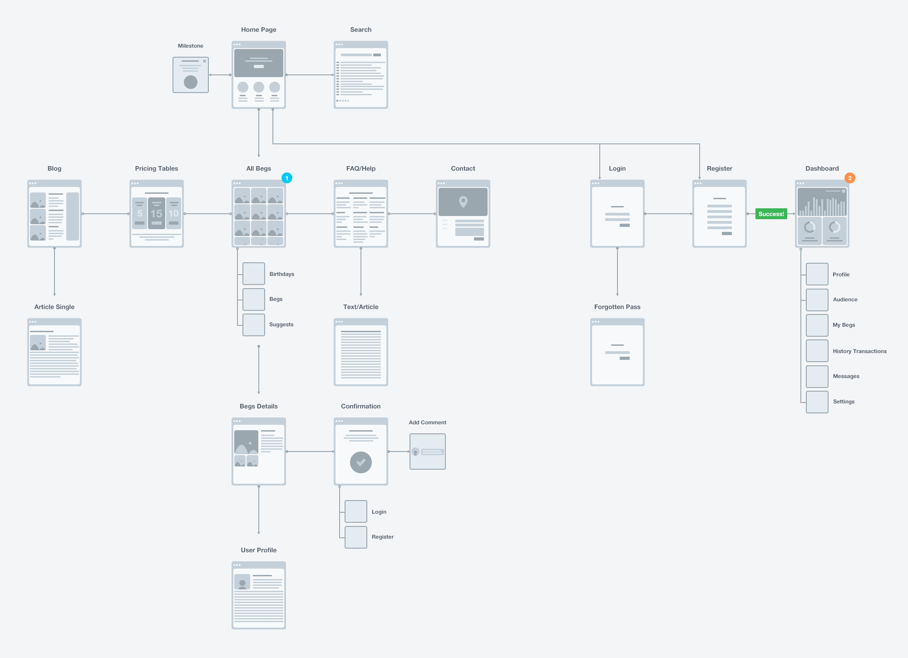

A07 - B: Information Architecture
Information Architecture, in an oversimplification, is how a website’s content is organized. If you look at the home page of the Washington Post it wasn’t an arbitrary design decision to put the “Video” content at the top of the page and the “Opinion” content out of view. Nor was it an arbitrary design decision to remove the images from the main content when viewed on small screens. These decisions were based on research done by Information Architects reviewing analytics and conducting A/B Testing. While the examples above describe the content at the page level, an Information Architect also organizes information at the site level. Using the Washington Post as an example again, you will arrive at any sports article within three clicks. Amazon has made the checkout process so simple you can place an order without going through a traditional shopping cart checkout process.
For the purposes of this course, and in the spirit of what graphic designers need to know about other web professionals, I’m going to split Information Architecture into two tasks: User Flow and Wireframing.
User Flow
Simply put, the User Flow is the path a user will flow through to get to the content they came to the site looking for. The more complex the user flow, the more difficult it becomes for the user. For example, if you are creating a user flow for a non-profit organization that relies heavily on donations, you want users to quickly get to the information about the importance of donations. However, simply making the “Donate” button more accessible may not make it effective. The UX team will be heavily involved to help determine the best way to convert site visitors to donors.
The other purpose for determining User Flow is create a Site Map. The site map is essentially the architectural blueprint of all the pages in a website. The site map is essential to the visual design process because it shows the graphic designer exactly what they need to design. However, it is important to note that the site map should be design agnostic. At this stage you are not designing anything visual yet.
    
Grading
- If you received 8–10 points you correctly identified the major pages and flow of the tasks in the allotted time.
- If you received 4–7 points your mostly identified the major pages and flow of the tasks in the allotted time.
- If you received 0–3 points you only identified a few of the major pages and flow of the tasks in the allotted time.
Resources
- UX Flowchart Cards
- Website Deck
- Explaining Information Architecture 4min
- Stop Designing Pages And Start Designing Flows
- User Flows: What Clients Need to Know
- User Flow Cards
Wireframes
Wireframes are very different from thumbnails. Yes, they are both visualizations of what a design can look like, but both serve a very different purpose. Wireframes are a visual tool that information architects, content strategists and designers use to organize the flow and hierarchy of content (elements) on a page. The wireframes should be design agnostic, meaning they should not be giving clues as to what the elements on a page look like, rather they should only be showing placement of elements.


However, wireframes tend to become visualizations not organizations if you don’t have any content to organize throughout a page or a site. So, in order for you to create our own wireframes you need to have content. You will be gathering content from sources that we will discuss in class. And just like the real world when you are working with a client you will be given content either from an existing website, from a bunch of Word Docs, PDFs, or who knows what that you will need to review and organize. You can put the content you collect into a Word Doc, Google Docs, etc. for the time being.
Once you gathered the necessary content, your next job will be to group and organize that content into sections and pages with wireframes. You will need to create the necessary number of wireframes by the end of class to house all of the content that you have gathered.
Grading
This assignment will be worth 10 points.
- If you received between 8–10 points you successfully created wireframes that demonstrated where all the content would go across the five different pages that was easily understandable.
- If you received between 4–7 points you successfully created wireframes that demonstrated where some of the content would go across most of the five different pages that was easily understandable.
- If you received between 0–3 points you unsuccessfully created wireframes that did not demonstrate where all the content would go across the five different pages that was easily understandable.